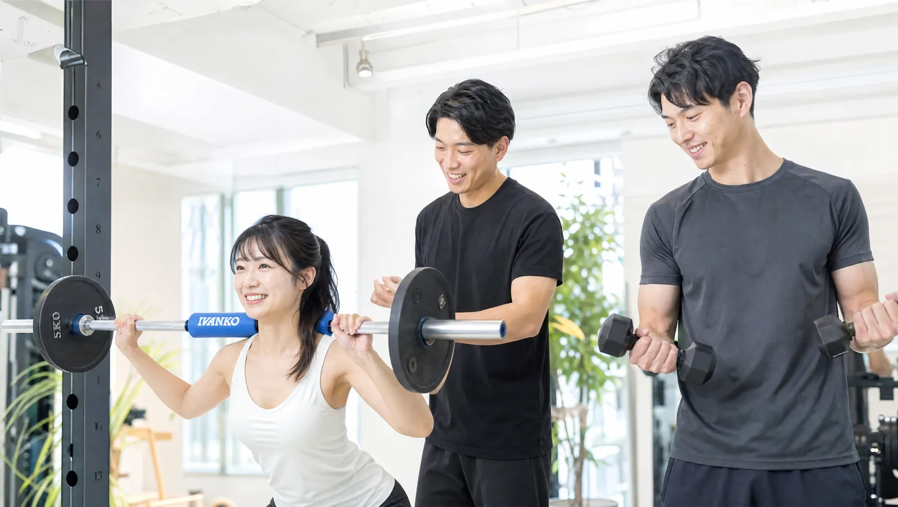
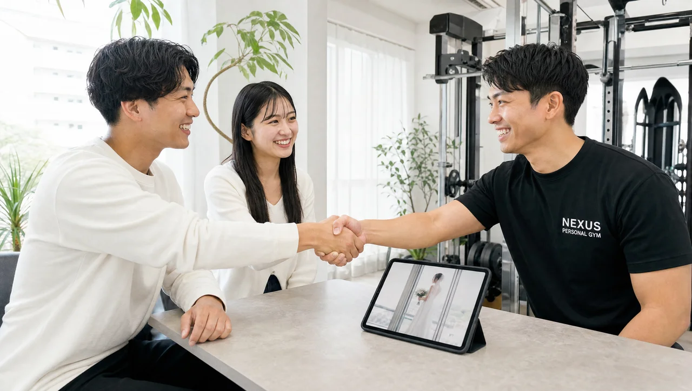

BRIDAL
新郎こそ準備が9割！
タキシードが似合う体づくりと
「ふたりで通う」ブライダルダイエット

SUMMARY
結婚式の写真に残るのは新婦だけではありません。タキシードで特に目立つのはお腹まわり・胸板・姿勢の3点。新郎の体づくりは、当日の並びと写真の満足度を大きく左右します。NEXUSは2名で通えるセミパーソナルに対応しているため、ふたり一緒に同じゴールへ向かえます。完全個室・全店8:00〜23:00・全国71店舗。※効果には個人差があります。
写真に残るのは、新婦だけじゃない
結婚式の写真には、必ず新郎も並んで写ります。だからこそ、新郎の体づくりは当日の満足度に直結します。準備というと新婦が中心になりがちですが、ふたりで並んだ写真、ゲストとの集合写真、指輪交換のアップ——どのカットにも新郎は写ります。
「自分は男だから」と後回しにすると、写真を見返したときに気になってしまうことも。タキシードは体のラインが出やすい衣装だからこそ、少し整えるだけで着姿の印象が変わります。ふたりで並んだときのバランスも良くなります。
新婦が数ヶ月かけて準備しているのに、新郎だけ何もしないと、当日の並びで差が出てしまうこともあります。逆に、ふたりで一緒に整えておけば、写真全体の印象がぐっと締まります。結婚式は、ふたりで作り上げる一日。体づくりも「新婦の準備」ではなく「ふたりの準備」と考えると、取り組む意味が見えてきます。ゲストの記憶にも、引き締まった新郎の姿は好印象で残ります。
タキシードで目立つ3部位
タキシードで特に目立つのは、お腹まわり・胸板・姿勢の3点です。ジャケットのボタンを留める関係で、この3点は着たときのシルエットにそのまま出ます。
- お腹まわり：ジャケットの前が引っ張られると、だらしない印象に見えやすい
- 胸板・肩：厚みがあると、ジャケットが立体的に決まり頼もしく見える
- 姿勢：背すじが通っているだけで、同じ体型でも着姿が引き締まる
これらは新婦の「見せる部位」とは違い、「シルエットを整える」方向のアプローチ。NEXUSのマンツーマン指導なら、タキシードの着姿から逆算して種目を選べます。※効果には個人差があります。
特にお腹まわりは、多くの新郎が最も気にする部位です。ここは短期間で劇的に変わる場所ではありませんが、食事を整えながらコツコツ取り組むことで、ジャケットの前がすっきり見えるようになっていきます。胸板や肩は、厚みが出るとジャケットのハンガー部分が決まり、頼もしい印象に。数字を追うより「タキシードをどう着こなすか」を基準に進めるのが、新郎の体づくりのコツです。

「ふたりで通う」からこそ続く
ひとりだと続かないことも、ふたりなら習慣にしやすくなります。NEXUSは2名で通えるセミパーソナルに対応しているため、おふたりで同じ時間に、同じゴールへ向かって取り組めます。予定を合わせやすく、お互いに励まし合えるのが最大のメリットです。
「今日は行こう」と声をかけ合える相手がいるだけで、通うハードルは大きく下がります。式準備で忙しい時期でも、ふたりで予定を組めば、自然と続く仕組みになります。もちろん、ご友人同士やご家族と通うことも可能です。
ふたりで通うと、食事の話も自然と共有できます。片方だけが食事を整えていると、家での食卓がちぐはぐになりがちですが、ふたりで同じ方向を向いていれば、日々の食事もそろえやすくなります。同じ目標に向かって並走する時間は、結婚式に向けたふたりの思い出そのものにもなります。「あの時期、一緒に頑張ったね」と後から振り返れるのも、ふたりで通う価値のひとつです。
挙式日から逆算する短期集中プログラム
ブライダル集中プランの料金を見る →仕事帰りの22時でも通える
NEXUSは全店8:00〜23:00で営業しているため、仕事帰りの遅い時間でも通えます。新郎は仕事の都合で時間が読みにくいことも多いもの。夜遅くまで開いているので、残業後や、新婦の式準備が一段落した時間に合わせて通えます。
手ぶらでOK、完全個室なので、周りの目を気にせず集中できます。全国71店舗すべてで同一料金・同一内容のため、勤務先の近くと自宅の近く、通いやすいほうを選べます。出張や転勤が多い方でも、行き先の近くの店舗で同じ内容を受けられるのは安心です。仕事が不規則でも、通える環境が全国に整っているのは、新郎にとって大きな味方になります。
「ジムは体を鍛えている人ばかりで入りにくい」というイメージを持つ男性も少なくありませんが、NEXUSは会員の多くが運動初心者。完全個室なので、他の会員と顔を合わせることもありません。トレーナーがお身体に触れないノータッチ指導のため、これまで運動習慣がなかった方でも、自分のペースで始められます。まずは無理のない範囲から、当日に向けて積み重ねていきましょう。
ふたりのプラン活用例
ブライダル集中プランは、ふたりで並行して取り組むことでゴールを共有できます。NEXUSのブライダル集中プランは、60分24回＋食事指導プレミアム付きで192,000円（税込）〜。おふたりがそれぞれプランを持ち、同じ時間帯にセミパーソナルで通う——という使い方が一例です。食事指導も一緒に受ければ、家での食事も自然と整いやすくなります。※効果には個人差があります。
挙式日という共通のゴールに向かって、ふたりで積み重ねた時間そのものが、当日の並びに表れます。
また、新郎はスケジュールが読みにくいぶん、通える曜日や時間を固定しにくいこともあります。そんなときも、全店8:00〜23:00の営業時間なら、その週ごとに通いやすい枠を選べます。おふたりで予定を合わせるのが難しい週は、それぞれ別の時間に通うことも可能です。「必ず一緒に」ではなく「基本はふたり、無理なときは個別」と柔軟に考えると、忙しい時期でも続けやすくなります。
まとめ｜新郎の準備が、写真を変える
タキシードで目立つお腹まわり・胸板・姿勢を整えれば、ふたりで並ぶ写真の満足度は変わります。そして「ふたりで通う」ことが、続けるいちばんの近道です。
おふたりで同じゴールを目指したい方は、まず無料体験で挙式日と目標を相談してみてください。セミパーソナルでの通い方もご案内します。結婚式は、ふたりで迎える人生の節目。その日に向けて一緒に体を整えた時間は、写真だけでなく、これから始まる生活の良いスタートにもなります。新郎の準備が、ふたりの一日をより誇らしいものにしてくれるはずです。
料金・回数・期間の目安をチェック
ブライダル集中プランの料金を見る →FAQ
よくある質問
Q新郎ひとりだけでも通えますか？＋
Qふたりで通うと料金は割引になりますか？＋
Q仕事が遅く、夜しか通えません。大丈夫ですか？＋
ふたりで並ぶ一枚のために。
一緒に始めませんか？
挙式日までの残り日数に合わせて、あなた専用のプランをご提案します。
※無理な勧誘は一切ありません。
本記事で紹介するブライダルボディメイクの成果には個人差があります。掲載の画像はサービス内容をわかりやすくお伝えするためのイメージです。実際のプランは無料体験時のカウンセリングで、お一人おひとりの体調・目標・挙式日に合わせてご提案します。